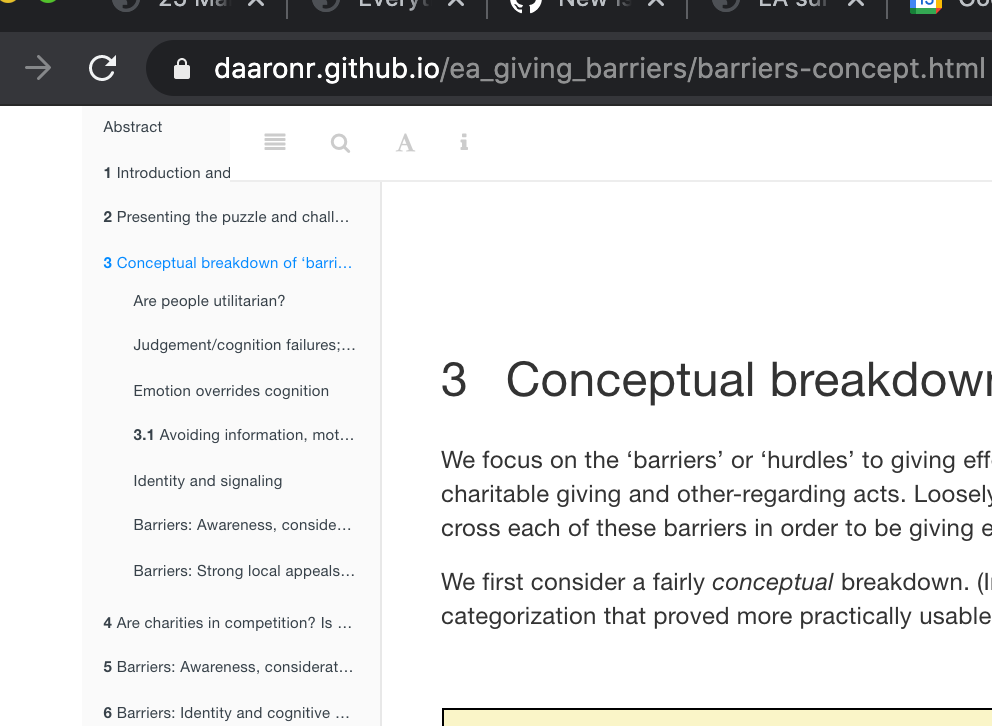

Increasing effective giving (& action): The puzzle, what we (need to) know
Abstract
While hundreds of billions of dollars are donated to charity each year, the effectiveness of these charities differs by orders of magnitude, even within similar categories. Furthermore, many individuals do not donate substantially even though they believe that the cost of saving a life is small.1
This raises two related questions:
1. “Why don’t we give more to the most effective charities and to those most in need?”, and
2. “Why are we not more efficient with our giving choices?”
To address this, we must understand what drives giving choices, and perhaps, how people react to the presentation of charity-effectiveness information.2
Our collaborative and dynamic synthesis considers this ‘puzzle’. We outline and categorize potential barriers to effective giving and assess the evidence for each barrier. This directly informs “how to motivate effective giving”. It also offers insights into the drivers of ‘concern for’ and ‘willingness to act’ to address the most neglected, tractable, and consequential global and humanitarian priorities.
Why should ‘Effective Altruists’ and those interested in long-term global priorities care about the effective/ineffective giving behavior of ‘typical’ individuals? Notes for Global Priorities Institute presentation (unfold)
Private ‘small donor’ donations are a substantial part of the global economy (100s of Billions)…
… but most/much seems orders of magnitude less effective by any reasonable (cosmopolitan) consideration. Bold research and action into global priorities is and will be largely funded by private giving.
How much private charitable giving is there? About $300b/year from the US alone (note appropriate caveats here; much of this goes to local ‘club goods’ like churches etc). (TODO: add some citations here, and give an overview of donation by ‘mega-donors’ versus the lay-person; see, e.g., recent paper by Meer et al.)
How does this compare to the ‘available pot of EA funds?’ GoodVentures spent 272 million USD in 2019, GiveWell ‘directed’ roughly 161 mln/year (Indirect source – EA Forum post here
Giving is also an important metric for beliefs and attitudes:
‘(Lack of) effective giving (choices)’ = a concrete, tangible, incentive-aligned measure of ‘concern for’ and ‘willingness to act’ towards neglected/tractable/consequential global priorities, including long-term well-being and existential threats.
Drivers and barriers to effective giving are also drivers/barriers to effective pro-social personal, professional and political choices.
In 2014, Ben Todd of 80,000 hours rated ‘Promoting effective altruism’ as tied for first-place in Importance, Tractibility and “Uncrowdedness” among 11 ranked causes, noting that “interventions within this area include advocacy of key ideas in effective altruism and network-building”. This is at least adjacent to promoting effective charitable giving.
Relation to GPI research:
Knowing priorities is only helpful if we can motivate people to care about them and take action.
Knowing the ‘barriers’ requires a clear definition of the priorities.
The ‘enlightement project’, which involves overcoming many of these barriers, may itself be a priority, e.g., in preventing existential risk.
Non-technical non-EA abstract (for mainstream audiences)
Hunger, homelessness, mental and physical illness, environmental degradation, the suffering of humans and animals, the risks of human extinction: the needs are boundless, but the resources to solve these problems are limited. Even with the best of intentions and impressive generosity (Americans give roughly 2% of their income to charity), donors often contribute to inefficient charities – ones that spend more but accomplish less than others that may be competing for the same funds.3 Each dollar given to the most effective charities (like those rated by Givewell.org) benefits greater numbers of people in more significant ways than the least effective ones. However, donors do not always consider effectiveness when deciding how much to give and to which organizations.
Academics (in Economics, Psychology, Biology, and Philosophy) have applied a range of theories to explain what drives “inefficient altruism”. Evidence comes from a variety of studies, involving surveys, observational work, laboratory experiments, and, where feasible, natural field experiments. These have not been run as part of a systematic project addressing this issue; goals, contexts, and approaches have varied as opportunities presented. Given the disparate findings, we do not have a definitive picture of which factors impact effective giving.
Some links to presentations
Discussions
For ‘Effective Altruists’ …
Jason Schukraft:
Maybe. I suppose it depends on our goals. Do we want people to give to top charities for the right reason (i.e., because those charities are effective) or do we just want people to give to top charities, simpliciter? If the latter, then maybe it doesn’t matter how people react to effectiveness information; we should just go with whatever marketing strategy maximizes donations.
David Reinstein:
Imho only the latter matters. [I revised this opinion below.] Your argument makes sense but a typical marketing tool we find could equally be used by any charity. If we are ever to get people to systematically prioritise the effective charities, we need to a strategy that is tied to the effectiveness of the charities; the competitive advantage of the effective charities. The standard business argument is that ‘to get people to buy a product based on characteristic A, we need to advertise characteristic A’.
Michael Aird:
I think another point similar to David’s is: If we use means other than cost-effectiveness information in order to get people to give to the charities we think are most cost-effective, then this positive outcome is “brittle” in a few ways:
We might be wrong about relative cost-effectiveness (in fact, we almost certainly are to at least some extent). If we were focusing on cost-effectiveness, that probably increases the chance that someone else realises we’re wrong and then makes a decision more in line with our principles than the specific decision we’d recommend, and/or gives us useful feedback.
Which charities are (believed to be) most cost-effective will probably change over time. We’d like our old arguments to help people update, without us needing a new campaign that pushes a different angle (maybe moving from making malaria sound scary to making fish seem cute, or whatever).
If we don’t focus on our actual reasons for our beliefs, those alternative reasons might happen to push in favour of some charities that aren’t actually great. E.g., some other charity that’s superficially similar to AMF, but less well-run or focusing on a country where marginal improvements cost more.
(But I do think that, even given that, it’ll probably sometimes be best to promote charities in ways that don’t emphasise things strongly relevant to their cost-effectiveness.)
This also feels reminiscent of two posts:
CEA - the-fidelity-model-of-spreading-idea
SlateStarCodex: guided-by-the-beauty-of-our-weapons
David Reinstein:
Good points, I’m coming around to to ‘the reason matters’, at least in terms of how we interpret these results.
Jason Schukraft:
Is giving to effective charities a decent proxy for having the right values and acting on those values? If so, then figuring out how to get people to give to effective charities might give us a lot of insight into the sort of moral circle expansion that EAs from many different corners of the community (e.g., both longtermists and animal welfare folks) care about.
David Reinstein:
Also a good point, and I should dig into this point further. I see ‘effective giving’ as jumping over several ‘hurdles’. 1. Empathy, 2. Willingness to sacrifice one’s own wealth to help others, 3. Having a wide moral circle, and 4. Being informed and clever enough to choose effectively
Notes on this format
This project is presented in ‘Bookdown’ format; it is not only a single page!
Please be aware that the left sidebar expands into sections and subsections…

On the right sidebar you should see some icons…

These are links to add and view comments using the tool Hypothes.is. Please sign up (it only takes a moment) and get involved. I will try to respond to and acknowledge all comments (email me if I have overlooked yours.)
See further notes in the technical appendix on how this is built, and how to add content. If you like, we can also import and export the content from any section to a Google Doc to enable collaborative editing.
Types of content
(See further notes in the technical appendix.)
Folding boxes can be opened to hide/show extra content for a better overview… I often move ‘interesting conversations on the subject at hand’ to these blocks.
Nothing in here this time though. Surprise!
Code blocks (e.g., R-code analysing data and presenting results in-situ; we have few if any so far) will be folded by default.
‘Note blocks’ are used to present aside material or particular things we want to make prominent.
Look how important I am!
Margin notes take the place of footnotes, with asterisks connecting the relevant material.5
We may occasionally use ‘regular footnotes’, but I don’t find they make sense in this context.
In citing papers and work, we ideally will give both a parenthetical reference and a one-click link to the content. (But at least one is a good start.)
In an exploratory survey, the median stated belief was that a life could be saved for under $40.↩︎
Do we need to understand “how people react to the presentation of charity-effectiveness information”? See discussion in fold below.↩︎
This holds even for charities pursuing similar goals; some are clearly more impactful per-dollar, even (presumably) by the lights and standards of the donors.↩︎
Note: the first part of this is decent but there was a technical problem at the end.↩︎
This is the relevant material….↩︎